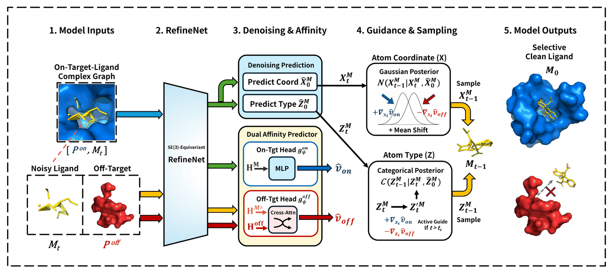

Hi, I'm
Hyoungjoon Park
AI for Drug Discovery
Integrated M.S./Ph.D. in Computer Science · Data Engineering Lab, Yonsei University
Advised by Prof. Sanghyun Park
Advised by Prof. Sanghyun Park
Structure-based drug design has learned to make molecules bind. It has not learned to make them not bind. Most generative models optimize affinity toward a single target and leave off-target interaction entirely uncontrolled — even though promiscuous binding is a leading source of toxicity and late-stage clinical failure.
My work treats selectivity as a first-class design objective. I build diffusion models that reason about on-target and off-target affinity at the same time, and that can do so without ever docking the off-target — because during generation, the intermediate molecule isn't chemically valid enough to dock.
Research
Selective Molecular Generation
Making off-target avoidance an explicit generative objective. Dual-affinity guidance injects attractive on-target and repulsive off-target gradients into the denoising process, steering both atom types and coordinates toward a maximized affinity gap.
Protein–Ligand Binding Affinity
Estimating affinity without a docked complex. Cross-attention over independently encoded protein and ligand embeddings bypasses 3D spatial alignment, making off-target affinity differentiable at every step of the reverse diffusion trajectory.
3D Molecular Representation
SE(3)-equivariant architectures that keep molecular geometry consistent under rotation and translation, and diffusion formulations that generate atom types, bonds, and interatomic distances jointly rather than in sequence.
Education
Current
2025.03 —
2025.03 —
Integrated M.S./Ph.D. in Computer Science
Yonsei University, Sinchon Campus
Advisor: Prof. Sanghyun Park · AI-driven Drug Discovery
Graduate GPA: 4.15/4.3
Graduate GPA: 4.15/4.3
Graduated
2019.03 — 2025.02
2019.03 — 2025.02
B.E. in Computer Engineering
Yonsei University, Mirae Campus
Double Major: Healthcare Convergence
Total GPA: 3.92/4.3 · Major GPA: 3.93/4.3
Total GPA: 3.92/4.3 · Major GPA: 3.93/4.3
Publications
PAKDD 2026
1st Author
Regular Paper
Published
TheSelective: Dual Affinity-Guided Diffusion for Selective Molecular Generation
Pacific-Asia Conference on Knowledge Discovery and Data Mining (PAKDD), LNAI 16598, pp. 16–27, Springer, 2026

TheSelective encodes the on-target complex, the noisy ligand, and the off-target protein through a shared SE(3)-equivariant backbone, then guides reverse diffusion with an attractive on-target and a repulsive off-target affinity gradient.
Dual-affinity guided diffusion that maximizes the on-target/off-target binding gap without requiring off-target docked structures. Evaluated on CrossDocked2020 against TargetDiff, KGDiff, and BInD.
0.975Selectivity, TM-High
+15.5% vs. KGDiff
+15.5% vs. KGDiff
3.363Selectivity, TM-Low
+12.2% vs. KGDiff
+12.2% vs. KGDiff
−9.97On-target Vina, TM-High
best among all methods
best among all methods
−9.95On-target Vina, TM-Low
best among all methods
best among all methods
Full results — CrossDocked2020 (Avg. / Med.)
| Set | Model | On-Dock ↓ | Off-Dock ↑ | Selectivity ↑ | QED ↑ | SA ↑ | Success ↑ |
|---|---|---|---|---|---|---|---|
| TM-High | TargetDiff | −7.583 / −7.577 | −7.405 / −7.391 | 0.178 / 0.165 | 0.469 | 0.585 | 91.0% |
| BInD | −7.510 / −7.569 | −7.391 / −7.422 | 0.120 / 0.062 | 0.505 | 0.658 | 88.1% | |
| KGDiff | −9.290 / −9.309 | −8.446 / −8.466 | 0.844 / 0.727 | 0.527 | 0.548 | 85.6% | |
| TheSelective | −9.969 / −9.958 | −8.994 / −9.001 | 0.975 / 0.923 | 0.495 | 0.534 | 50.2% | |
| TM-Low | TargetDiff | −7.566 / −7.552 | −5.567 / −5.564 | 1.999 / 1.993 | 0.467 | 0.583 | 91.9% |
| BInD | −7.536 / −7.589 | −5.608 / −5.643 | 1.928 / 1.934 | 0.502 | 0.654 | 89.1% | |
| KGDiff | −9.343 / −9.366 | −6.345 / −6.393 | 2.998 / 2.980 | 0.528 | 0.546 | 85.6% | |
| TheSelective | −9.954 / −9.909 | −6.591 / −6.588 | 3.363 / 3.259 | 0.511 | 0.557 | 56.9% |
Selectivity = Off-Dock − On-Dock (kcal/mol); higher is better. QED / SA reported as Avg.
Success = fraction of molecules validly reconstructed by Open Babel and successfully docked against both proteins. The selectivity gain comes at a cost in reconstruction validity; recovering it is ongoing work.
Success = fraction of molecules validly reconstructed by Open Babel and successfully docked against both proteins. The selectivity gain comes at a cost in reconstruction validity; recovering it is ongoing work.
KCC 2025
1st Author
Published
Extended Diffusion Model for Molecular Graph Generation Incorporating Distance Matrix
Korea Computer Congress (KCC), Jeju, Korea, 2025
Domestic conference (Korean)
KCC 2024
Published
Comparison of Inference Acceleration Performance of CPU-based Image Classification Models
Korea Computer Congress (KCC), Jeju, Korea, 2024
Experience
Current
2025.03 —
2025.03 —
Graduate Researcher
Yonsei University, Sinchon Campus
Research on AI-driven structure-based drug design. Developing diffusion-based frameworks for selective molecular generation, and protein–ligand interaction models for binding affinity prediction.
2024.06 — 2024.07
Short-Term International Research Intern
University of Nevada, Las Vegas (UNLV), USA
Completed a machine learning course and carried out a satellite land-cover image segmentation project.
2024.03 — 2024.06
Undergraduate Research Assistant
Applied Data Science LAB, Yonsei Univ. Mirae Campus
Presented paper reviews at lab seminars and assisted research on drug repositioning.
Projects
2025 — Present
Dual affinity-guided diffusion for selective 3D molecule generation. On-target attractive + off-target repulsive gradients with a scheduled guidance transition. Selectivity 0.975 (TM-High) / 3.363 (TM-Low) on CrossDocked2020, +15.5% / +12.2% over KGDiff. Published at PAKDD 2026.
Diffusion
SBDD
Selectivity
PyTorch
2025.05 — 2025.11
LAIDD Mentoring Project: Small Molecule Generation & Target Activity Prediction
Small-molecule generation and activity prediction against target proteins. AI drug discovery mentoring program hosted by the Korea Pharmaceutical and Bio-Pharma Manufacturers Association (KPBMA).
LAIDD
Mol Gen
Activity Prediction
KPBMA
2024 — 2025
3D Molecular Graph Generation with Distance Matrix
SDE-based diffusion that jointly generates atom types, bonds, and the 3D distance matrix, with Gaussian-kernel distance features integrated into the graph representation.
SDE
GNN
QM9
ZINC250k
2024.03 — 2024.06
Drug Repositioning with GCNs
Drug repositioning candidate discovery via GCN link prediction over a drug–disease heterogeneous network, evaluated with 10-fold cross-validation.
GCN
Heterogeneous Net
10-Fold CV
Awards & Scholarships
2024
2nd Prize, AI-based Medical Data Analysis Competition
Intel Korea
2024
3rd Prize, Digital Healthcare Startup Idea Awards
Yonsei University
2019 · 2024
Academic Excellence Scholarship (×3)
Yonsei University
2024
SW Major Excellence Scholarship
Yonsei University
2020
1st Prize, Winter Java Training Camp
Yonsei University
2019
1st Prize, Summer C Language Training Camp
Yonsei University
Certifications
2025.11
LAIDD Mentoring Project — Small Molecule Generation & Target Activity Prediction
Korea Pharmaceutical and Bio-Pharma Manufacturers Association (KPBMA)
2024.09
TOEIC 860
ETS
2024.08
CDS Big Data Expert Training Camp with KNIME
Yonsei University
2024.02
Naver Cloud DB Computing Program
NAVER Cloud
2024.01
Healthcare Big Data Analysis with RStudio
Commento
2023.10
TOPCIT 425
IITP
2023.06
AI-based Medical Device Software Training
NIDS
Skills
Deep Learning
PyTorch
PyTorch Geometric
e3nn
Diffusion Models
SE(3)-Equivariant GNN
Transformer
Drug Discovery
RDKit
AutoDock Vina
Open Babel
CrossDocked2020
QED / SA
TM-align
Languages
Python
Java
C
SQL
R
LaTeX
Tools & Infra
Git
Linux
Docker
W&B
DDP Multi-GPU
LMDB